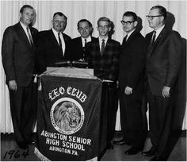
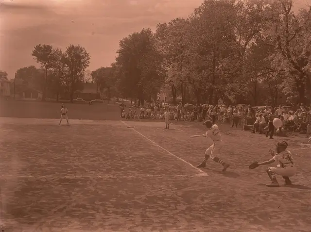
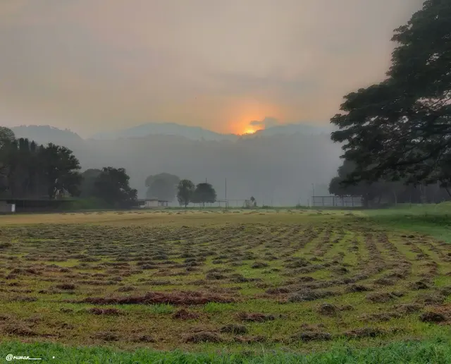
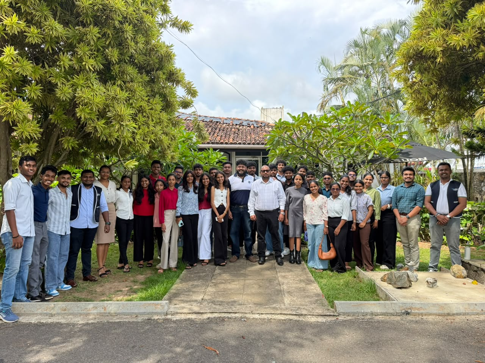
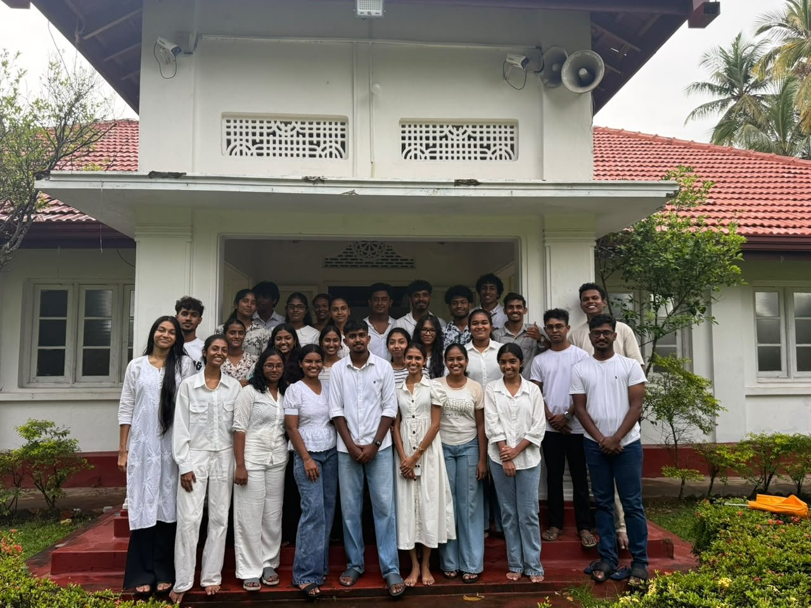
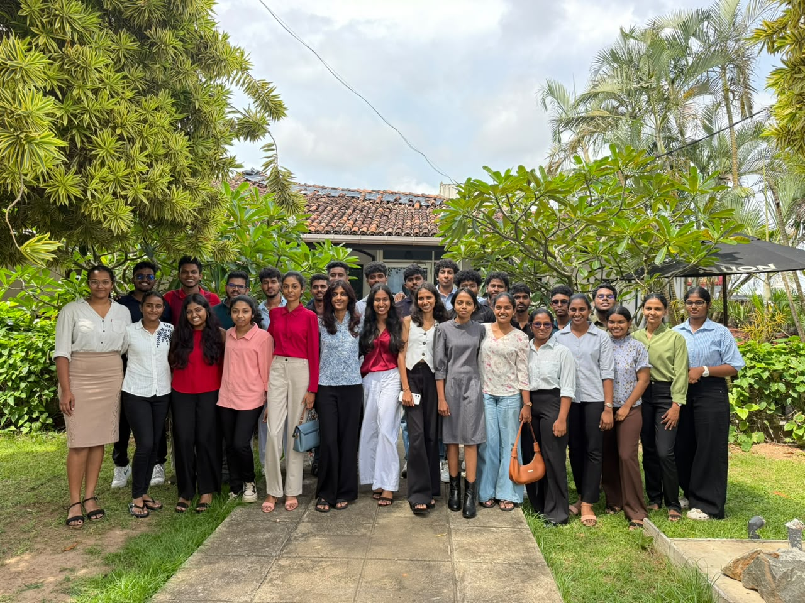
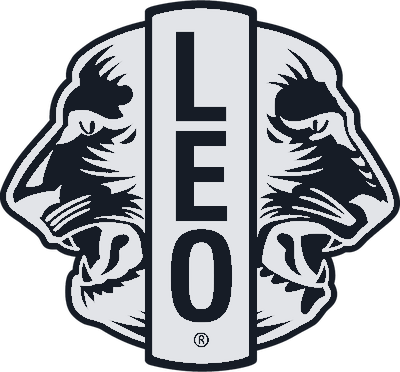

Leadership
Plan projects, manage time and guide teams to outcomes that matter.
How a baseball coach and a team of students started something that reached Sri Lanka in 1969 and our own club in Matara.
Abington, Pennsylvania
Jim Graver coached baseball at Abington High School and was a member of the Glenside Lions Club. He believed young people should be able to serve their community, not just watch adults do it.
On 5 December 1957 the Glenside Lions chartered a club for the school, and most of its thirty-five founding members came from his team. The Leo Club Program had begun.

Three words
Leo is an acronym: Leadership, Experience, Opportunity. The middle word started life as “Equality” and was later changed to Experience, which says a lot about how Leos learn: by doing.
Those three words are still our pillars today, and you can see them across this website.
Plan projects, manage time and guide teams to outcomes that matter.
Learn by doing: collaborate, execute and see the impact of service on your community.
Make lifelong connections with purpose-driven people while growing your skills and influence.
One club becomes a programme
Other Lions clubs saw what Abington was doing and started Leo clubs of their own. Through the 1960s Lions Clubs International adopted the idea as an official programme, and it spread to dozens of countries. Published sources give slightly different years for the formal adoption, so we say “the 1960s”.
Today every Leo club is sponsored by a Lions club, which mentors and supports it while the Leos run the projects.
Two tracks
Leo clubs charter on one of two tracks. Alpha clubs are for ages 12 to 18, mostly in schools. Omega clubs are for ages 18 to 30, in universities, institutes and communities.
Sri Lanka
According to Leo Multiple District 306, the first Leo club in Sri Lanka, the Leo Club of Wattala, was chartered in 1969. From one club the movement grew into Leo Multiple District 306, which today covers Sri Lanka and the Maldives with twelve districts and more than 210 clubs.
The Maldives
In 2023 the first Maldivian Leo club was formed in Malé, so the family of clubs now stretches across two countries.
Our own chapter
We belong to Leo District 306 D8, sponsored by the Lions Club of Matara Excellence. Our first big day was the District 306 D8 orientation, followed by Leo Abhivandana and Amadam Sisila.
We are a young club, but we are part of a story that is more than sixty years old. This is only the beginning of Excellence.
Places in the story


Photos come from public archives and Wikimedia Commons. If you own one and would like a credit or a change, message us on Instagram.
Our first steps




We wrote this story in our own words from the public history of Lions Clubs International and Leo Multiple District 306. Where sources give slightly different dates, we use the more cautious wording.